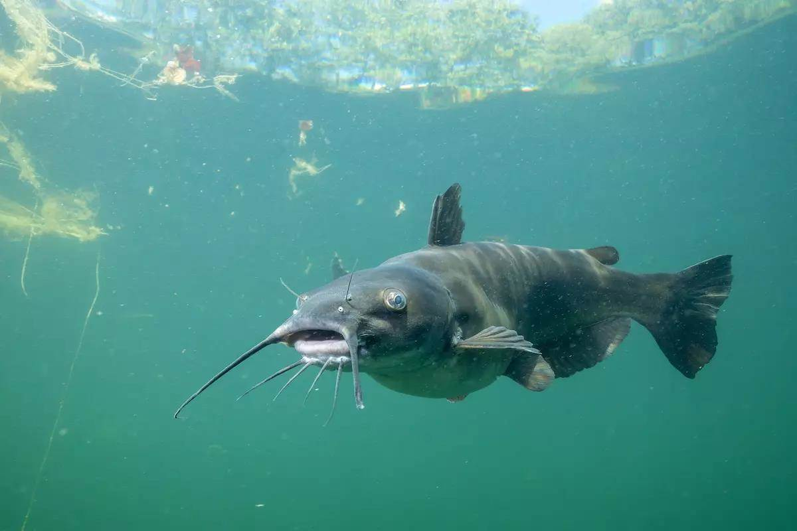

Ictalurus punctatus
Channel catfish are one of Montreal's most underrated sport fish. They grow large, fight hard, and can be targeted from shore with simple gear and inexpensive bait. The St. Lawrence River holds a world-class population of channel cats — fish over 5 kg are caught regularly near Montreal — and the night bite in particular can be as consistent and exciting as any fishing the region offers. If you've never targeted catfish deliberately, you're missing out on one of the city's best-kept fishing secrets.
Species Overview
| Average Size (Montreal) | 40–70 cm, 1–5 kg |
| Trophy Size | 80+ cm, 8–10 kg+ |
| Quebec Record | 16.8 kg (St. Lawrence River) |
| Habitat | Deep river channels, lake bottoms, river confluences |
| Peak Season | June–September, with best action June–August at night |
| Best Baits | Cut bait, chicken liver, nightcrawlers, stink bait, fresh minnows |
| Top Local Spots | St. Lawrence River (Lachine to Varennes), Lac Saint-Louis deep channels |
| Regulations | No minimum size in most zones; check MFFP for current limits |
Habitat & Behaviour
Channel catfish are primarily bottom-dwelling fish that navigate using an extraordinary sense of smell. They possess taste buds not only in their mouths but distributed across their skin and whisker-like barbels — giving them the ability to detect food in complete darkness and in highly turbid water. This is the foundation of catfish angling: you're targeting a fish that is hunting by scent, not sight.
During the day, channel cats rest in deep holes, undercut banks, and the shadow of large structure — bridge pilings, dam tailwaters, deep river bends. At dusk, they move onto adjacent flats, shallow river edges, and tributary mouths to feed. The nighttime feeding window from 9 pm to 3 am is peak catfish time throughout the summer. On overcast days and after heavy rain events that cloud the water, daytime action improves significantly.
Seasonal Breakdown
Spring (May – early June)
As water temperatures climb above 10°C, catfish become more active and begin staging near spawning areas. They spawn in late spring and early summer in cavities — hollow logs, undercut banks, rock crevices — at temperatures between 21°C and 27°C. Pre-spawn fish are hungry and can be caught during daylight hours more readily than at any other time. Target the downstream ends of river pools and deep eddies near current.
Summer (June – August)
Summer is catfish season in Montreal. Warm water, active fish, and the classic night bite combine for some of the most enjoyable fishing of the year. Set up on a deep river bend or near a dam tailwater after dark with cut bait or chicken liver on a slip-sinker rig, cast to the deep channel, and wait. Runs can be sudden and powerful — a rod tip that dips steadily is often a catfish. Use a rod holder and watch your line carefully. The scent cloud from your bait does the work; patience does the rest.
Fall (September – October)
Catfish remain active into fall as long as water temperatures stay above 12°C. They feed heavily in September and early October before moving to their winter holding areas. Fall fish tend to concentrate in predictable deep-water areas — main river channel holes, the deepest sections of lake basins. Daytime fishing improves in fall as temperatures cool and fish no longer need darkness to feed comfortably.
Top Presentations
Slip-Sinker Rig (the Standard)
The most effective and widely used catfish setup: a 1 to 3 oz egg sinker threaded onto the main line above a barrel swivel, with a 12 to 18-inch fluorocarbon leader and a size 1 to 2/0 circle hook. The slip sinker allows a fish to pick up the bait and move without feeling resistance, which is critical for circle hook hook-sets. When the line tightens and starts moving steadily, reel down and the circle hook sets itself — no hard hook-set required.
Three-Way Rig for Current
In heavy St. Lawrence current, a three-way swivel rig keeps the bait positioned correctly. Tie your main line to one eye of the three-way swivel, a 6 to 12-inch dropper to a heavy sinker (2 to 4 oz) on the second eye, and a 24 to 36-inch leader to your hook on the third. The sinker anchors on the bottom while the bait floats just above, presented naturally in the current.
Best Baits
Cut bait from local species — shad, perch, or sucker — is consistently the top catfish bait on the St. Lawrence. Fresh or slightly aged chicken liver is highly effective but requires a mesh bait holder to stay on the hook. Nightcrawlers on a treble hook produce well in summer. Commercial stink bait on a sponge or treble hook works when fish are actively feeding but is messier to use. Fresh bait always outperforms frozen; if you can catch live baitfish and use them fresh-cut, you'll notice the difference.
"Set up on a St. Lawrence river bend after dark with cut bait in the channel. When the rod tip dips and keeps going, you have your answer."
Gear Setup
A 7 to 8-foot medium-heavy or heavy action rod is ideal for catfish — long enough for casting heavy sinkers from shore, stout enough to handle a large fish. Pair it with a quality spinning or baitcasting reel with a good drag system spooled with 20 to 30 lb monofilament or braided line. A sturdy rod holder is essential for night fishing — set the rod, engage the clicker, and you'll hear the run when it comes.
Circle hooks in size 1/0 to 3/0 are strongly recommended. They have a much higher rate of hook-up on self-setting hook-sets compared to J-hooks, and they reduce deep-hooking, making catch-and-release much safer for the fish.
Safety Note
Channel catfish have sharp pectoral and dorsal spines that can cause painful punctures. When handling a catfish, grip it firmly from behind the pectoral spines with your thumb on one side and fingers on the other — called "catfish gripping." Avoid the spines when unhooking. The spines are not venomous but punctures can become infected, so clean any wounds promptly.

20+ years fishing Quebec's freshwater systems. Kayak angler, catch-and-release advocate, and founder of Sub Urban Anglers.
Read More About Me